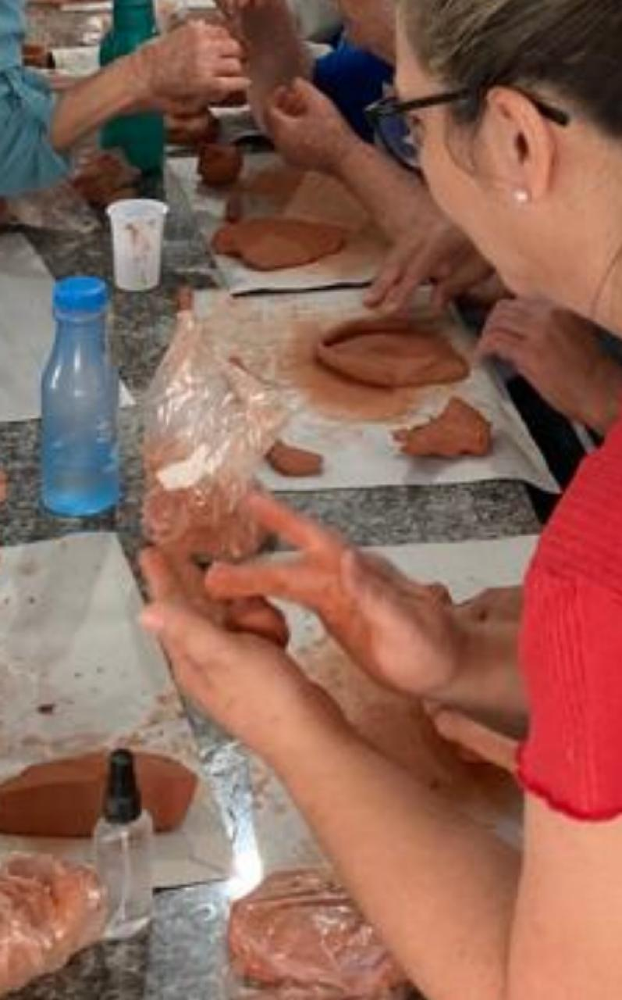

1. Promove a comunicação eficaz: Participar de atividades arteterapêuticas em grupo pode ajudar os
funcionários
a se expressarem de forma não verbal, facilitando a comunicação de emoções, pensamentos e experiências que
podem ser difíceis de expressar verbalmente. Isso pode fortalecer os laços entre os membros da equipe e
promover um ambiente de trabalho mais aberto e receptivo.
2. Estimula a criatividade e a inovação: A arteterapia incentiva a exploração criativa e o pensamento
divergente, o que pode levar a novas ideias e soluções inovadoras para os desafios enfrentados pela equipe.
Ao incorporar técnicas artísticas, os funcionários são encorajados a pensar fora da caixa e a considerar
perspectivas diferentes.
3. Aumenta a empatia e a compreensão interpessoal: O processo de criação artística pode ajudar os
funcionários a desenvolver empatia ao perceberem as experiências e perspectivas dos outros. Isso pode
melhorar as relações interpessoais dentro da equipe, promovendo a compreensão mútua e a resolução de
conflitos de forma mais eficaz.
4. Promove o autoconhecimento e o desenvolvimento pessoal: A arteterapia pode ajudar os funcionários a se
conhecerem melhor, explorando suas emoções, valores e experiências pessoais por meio da arte. Isso pode
levar a uma maior autoconsciência, autoaceitação e crescimento pessoal, o que, por sua vez, pode melhorar as
interações e relacionamentos com os colegas de trabalho.
5. Reduz o estresse e melhora o bem-estar: Participar de atividades artísticas pode ser terapeuticamente
benéfico, ajudando os funcionários a reduzir o estresse, aliviar a tensão e promover o bem-estar emocional e
mental. Funcionários mais felizes e saudáveis tendem a ser mais engajados, produtivos e colaborativos no
trabalho em equipe.
A arte cerâmica faz a conexão com o inconsciente, trabalhando de forma lúdica, temas importantes, trazendo autoconhecimento e consciência para a mudaça comportamental.
Ofereça uma oficina aos seus funcionários e doe outra para uma entidade parceira
Atividades com entidades parceiras apoiando jovens em vulnerabilidade social
4 encontros de 3h cada ( 2 para empresa e 2 para projeto social )
2 professores para 10 participantes
Trabalhamos temas adaptados a realidade da empresa.
Divulgação dos resultados da ação.
Todo o material ( argila, utensilhos e acessórios. )
No espaço Farol, com apoio de designer de interiores para organizar uma exposição incrivel.
As peças criadas pelas entidades parceiras serão vendidas e toda a renda arrecadada será revertida para a AJIDEVI.
A marca da empresa terá espaço de divulgação nas exposições e nas mídias, como patrocinador.